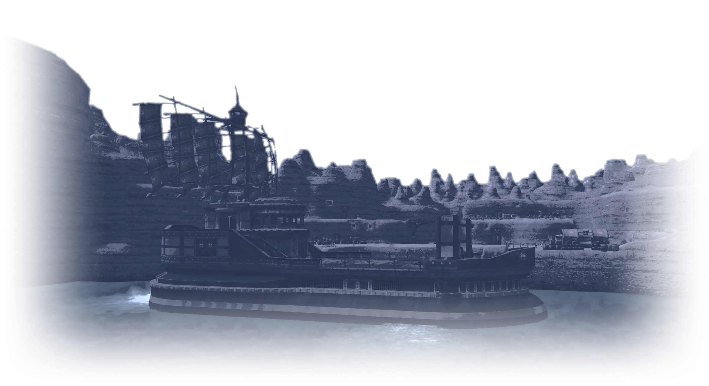

Explore
Play the climb from 1 to 75 with companions, Champions, rifts and all.

Beta Testers Needed
Vana’diel is calling. Be first through the door.
The Timeless XI beta opens in December 2026. We're looking for adventurers to explore every corner, push every new system, and tell us what they find.
Your part
Play the climb from 1 to 75 with companions, Champions, rifts and all.
Find the fights that are too easy, the drops that feel wrong, and the bugs nobody expected.
Your reports and ideas decide what changes before the doors open to everyone.
Who we’re looking for
What you’ll need
Three steps
Beta sign-ups, dates and news are all announced there first.
They're short, and they keep Timeless XI fair and friendly.
When the beta opens, the Timeless XI setup is posted in the Discord.
Questions
Yes. Timeless XI is a free, fan-run project.
No. The setup installs everything, and you just press Play.
The Timeless XI setup finds FINAL FANTASY XI on your PC, or downloads it for you.
Yes. Companions fill your party, so you can play solo, with friends, or both.
December 2026. Exact dates are announced in the Discord.
Join the Discord and you’ll hear the moment the beta opens.